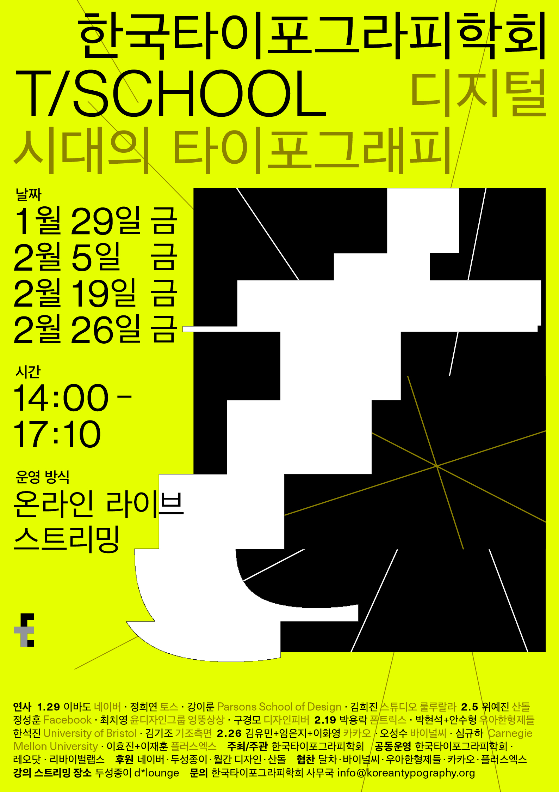

오직 피지컬 워크숍(2) 수업과 디자인 스튜디오(2)을 위한 장표
바야흐로 재연의 미디어아티스트 꿈나무 시절...
“한예종에 너랑 똑닮은 친구 있다? 너처럼 재수해서 들어오고 코딩 막 하고다니고 머리도 장발이야!”
그렇게 시작된 서로의 인스타 염탐...

faction에서 진행된 전시 Plantis와 THHA v1
교묘하게 연달아 같은 공간에서 전시를 진행한 전시 이웃...
“이쯤이면 한번 연결될 때가 되었다.”

2021년도 한국타이포그라피학회 강연
T/SCHOOL: 디지털 시대의 타이포그래피
심규하 연사님의 컴퓨테이셔널 디자인에 대한 소개,
강이룬 연사님의 디자인 도구 비평
현재 내가 가진 고민들과 방향에 대해 묻고 답을 듣고 싶은 마음.
#3
포킹룸(Forkingroom)
강민형, 송수연, 최빛나
예술-기술-사회의 접면에서 발생하는 현상에 관심을 두고 리서치, 전시, 워크숍, 강연, 토크 등이 진행되는 일시적인 플랫폼
AI 기술과 이미지 생성에 대한 해석, 최근 갖고 있는 ‘비표준적 심상 아카이브’에 대해 자문을 구해보는
자기 객관화, 나를 객관적으로 바라볼 수 있는 방법에 대한 고민
많은 질문 리스트를 작성해두고 그 안에서 10가지의 질문을 랜덤으로 추출
모르는 사람에게 해당 질문을 받은 상황을 가정하고 답변